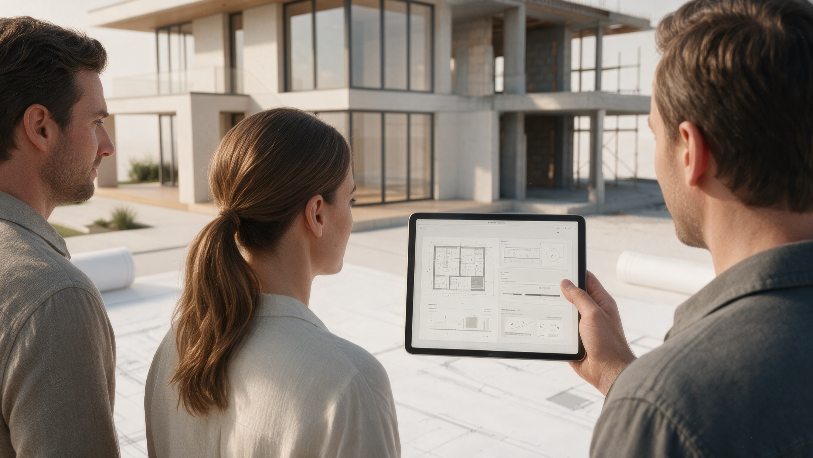

Проект «Первый»
80 м²9,5 × 9,0 м3 спальни1 этаж
от 3 840 000 ₽ черновая отделка
Компактный одноэтажный дом для постоянного проживания. Подойдёт для семьи, которая хочет разумную площадь, понятную смету и быстрый старт строительства.
Дом под вашу семью. Смета под вашу задачу.
От проекта и фундамента до инженерии и отделки — в одной команде.
Газобетон · кирпич · каркасная технология
Компактный дом, семейная планировка или больше пространства с террасой. Выберите основу — обсудим изменения под ваш участок и бюджет.
от 3 840 000 ₽ черновая отделка
Компактный одноэтажный дом для постоянного проживания. Подойдёт для семьи, которая хочет разумную площадь, понятную смету и быстрый старт строительства.
от 4 650 000 ₽ черновая отделка
Удобный одноэтажный дом с тремя спальнями. Хороший вариант для семьи, которой важны отдельные комнаты, просторная общая зона и комфорт без второго этажа.
от 6 100 000 ₽ черновая отделка
Просторный одноэтажный дом с большой крытой террасой. Подойдёт тем, кто хочет светлую общую зону, три спальни и место для отдыха на свежем воздухе.
Черновая — цена из каталога. Предчистовая выше на 15 000 ₽ за м²: это ориентир, точную смету считаем по комплектации. Нажмите на фотографию, чтобы посмотреть планировку.
Расскажите о нём. Рассчитаем строительство под ваши параметры.
Вам не нужно собирать стройку из отдельных исполнителей. Проект, материалы, бригады и последовательность работ связываем в один понятный план.
В смете — состав работ и материалов. Стоимость и комплектацию согласуем до начала строительства, изменения обсуждаем отдельно.
Учитываем количество спален, общую зону, этажность и пожелания к участку. Работаем с готовым или индивидуальным проектом.
Показываем работы в фото- и видеоотчётах. Объясняем, что выполнено и что предстоит. Ключевые условия закрепляем в договоре.
Сначала определим площадь, участок и комплектацию. Затем сравним технологии и подготовим смету на выбранный вариант.
Каменный дом для постоянного проживания с выбором фасада и планировки.
Вариант для тех, кому важны бюджет и сроки строительства.
Капитальный дом с кирпичными стенами и индивидуальным обликом.
Стоимость за м² — предварительный ориентир. Окончательная цена зависит от проекта, условий участка, материалов и объёма работ. Состав «под ключ» фиксируется в договоре.
Фундамент, коробка, кровля, инженерия и отделка должны быть указаны в смете. Так можно понять, какие расходы уже учтены и что потребуется дополнительно.
Выберите проект и материал, расскажите об участке. Уточним задачу и подготовим предварительный расчёт строительства.

Нужны только основные параметры — детали обсудим лично.
Обсуждаем участок, состав семьи, площадь, бюджет и желаемый срок переезда.
Определяем планировку, материал стен и комплектацию. Готовим расчёт работ.
Согласуем стоимость, сроки, этапы оплаты и гарантийные обязательства.
Организуем материалы и работы. Показываем ход строительства в отчётах.
Проверяем результат вместе с вами. Передаём дом и документы по договору.
О смете, общении и ходе работ — отзывы клиентов о строительстве дома.
«Больше всего переживали, что стоимость вырастет в процессе. До подписания помогли разобрать смету и этапы, а во время стройки проверяли объёмы перед оплатой и объясняли замечания».
«Мы живём в другом городе, поэтому важно было видеть процесс удалённо. Каждую неделю получали фото и видео, на вопросы отвечали быстро».
«Понравилось, что не торопили с выбором застройщика. Сначала разобрали смету, материалы и этапы. Было понятно, что и когда проверять до следующей оплаты».
Позвоните или напишите — обсудим проект, участок и следующий шаг.